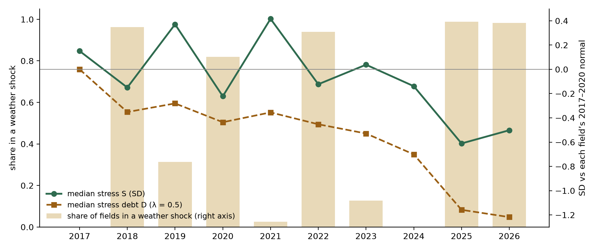
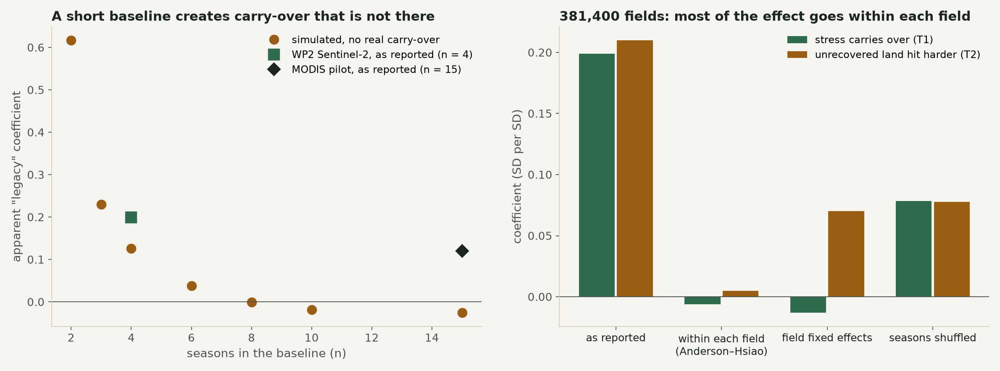

Abstract. Satellite studies of agricultural resilience often measure each field's response to drought as an anomaly against its own recent normal, and then ask whether stress in one season carries into the next. In the Sentinel-2 era that normal is necessarily short. We show that a short baseline can create an apparent drought legacy where none exists. Using Sentinel-2 crop condition for all 381,400 cereal fields in England, 2017–2026, with drought and heat shocks defined from ERA5-Land weather alone, a conventional pooled test finds strong carry-over: +0.20 standard deviations of this season's stress per standard deviation of last season's, +0.21 in shock seasons, and an apparent slowing of recovery with accumulated stress. In simulated fields with no carry-over at all, the same test with a four-season normal returns +0.13. Once each field is compared only with itself, using a dynamic-panel estimator calibrated by simulation, the carry-over is at most about 0.05; the "hit harder" effect is at most about 0.1 and unresolved; and the recovery effect is not supported. A long-baseline test with MODIS (each field's normal from 16 seasons, 2001–2026) confirms this with a second sensor: within each field the carry-over is about zero, and the artefact reappears whenever the tested seasons all lie after the baseline. What survives is a lasting difference between fields relative to their own normal, which still predicts next season's hardest-hit fields out of sample (AUC 0.63). We give a simple diagnostic set (dynamic-panel estimates, season-shuffling placebos and simulation calibration) for any resilience study built on short anomaly baselines.
Droughts are increasingly consecutive. England's cereal land had dry springs in 2025 and 2026 back to back, after dry summers in 2018, 2020 and 2022 (Figure 1). Whether damage from one season carries into the next matters for food supply forecasting, for farm finance, where a second shock on an unrecovered farm is a credit event, and for policy that pays farmers to build resilience. Earth observation is attractive here because it sees every field every few days and needs no farm survey.
The usual design measures each field's condition as a standardised anomaly against its own normal and tests for persistence: does a bad season predict a worse next one, especially when the next one is also a shock? With Sentinel-2 (from 2015, with full coverage over England from 2017), that normal can only use a handful of seasons. Any error in a short normal is shared by every later season of that field. A field whose normal happens to be set too high will look stressed season after season, and the test reads that as carry-over.
We set out to measure drought legacies across all of England's cereal land, found strong ones, and then found that most of the effect came from the baseline. This paper reports both, because the second finding is the more useful: it applies to any resilience indicator built on short per-pixel or per-field normals. [Position against the drought legacy, consecutive extremes and EO resilience literature: to be written.]
Contributions: (i) a field-scale measurement of crop stress and weather shocks for a whole country's cereal land; (ii) evidence that the conventional persistence test is dominated by a short-baseline artefact, quantified by simulation; (iii) within-field estimates, calibrated by simulation, that bound the true carry-over; (iv) a diagnostic set and recommendations for future studies.
Fields. Rural Payments Agency land parcel points for England (2,686,103 parcels). Cereal land is defined as parcels in cereals (wheat, barley, oats, rye, triticale) in at least half of the Crop Map of England (CROME) years 2016–2025: 381,400 parcels.
Crop condition. Sentinel-2 L2A surface reflectance (harmonised collection) via Google Earth Engine, masked with Cloud Score+ (cs_cdf ≥ 0.6) and the scene classification (vegetation and bare soil only), averaged over a 15 m buffer around each parcel point. Half-monthly medians from March to August of NDVI, red-edge NDRE and NDMI, 2017–2026 (3,814,000 parcel-seasons).
Weather. ERA5-Land monthly and daily aggregates on the 0.1° grid (1,655 cells cover the cereal parcels), 1991–2026; the 1991–2020 period defines the climate normal. Flood zones (Environment Agency) and peat (Natural England) are used for descriptive context and the field score.
For each parcel and season, July NDVI (mean of the two July half-months) and peak NDVI (maximum from mid-April to mid-July) are standardised against the parcel's own 2017–2020 seasons; the stress index S is the mean of the two z-scores, clipped to ±6. A season is a shock for a parcel when its ERA5-Land cell has a dry shock (March–July rainfall at least 20% below normal, or June–July root-zone soil moisture at least 1 SD below normal) or a heat shock (5 or more days at or above 28 °C in June–August). Shocks are defined from weather only, never from the crop. Stress debt accumulates negative stress: Dt = λDt−1 + min(St, 0), λ = 0.5.
T1 (legacy): St on St−1. T2 (unrecovered land is hit harder): the same, in shock seasons only. T3 (debt slows recovery): the rebound St+1 − St after a shock season followed by a calm one, on Dt−1, controlling for St. All tests absorb weather-cell × season effects, so fields are compared only with fields facing the same weather; standard errors are clustered by ERA5 cell. A crop-rotation version compares fields within cell × season × CROME crop.
Persistent differences between fields, whether real or created by the baseline, enter every season and can drive T1–T3. We therefore estimate the dynamic effect within each field: (a) two-way fixed effects (field and cell × season), which is biased towards zero in short panels (Nickell, 1981); (b) the Anderson–Hsiao estimator (Anderson and Hsiao, 1981): first differences remove the field effect, and last season's change is instrumented by the season before it (first-stage correlation −0.62). As a placebo, each field's seasons are shuffled at random, which keeps any lasting field difference but destroys the season order.
We simulate 40,000–60,000 fields over 10 seasons in 400 weather cells: a field effect (SD 1), a cell × season
effect (SD 0.8) and a seasonal term following an AR(1) process with a chosen carry-over ρ (innovation variance scaled
to keep unit variance). Each field is standardised against its first n seasons, exactly as in the real data,
and the same tests are run. This gives (i) the apparent legacy produced by a baseline of n seasons when ρ = 0,
and (ii) a calibration of each within-field estimator against known ρ
(src/baseline_artefact_sim.py).

Shock seasons covered most fields in 2018, 2020, 2022, 2025 and 2026. Median stress was lowest in 2025 (−0.61 SD) and 2026 (−0.50), and median stress debt deepened to −1.22 by 2026. About 35% of fields fall into a "repeated stress" class (persistent or back-to-back below −1 SD), most in the East Midlands and Lincolnshire, a central-southern belt and Cornwall; because that class is measured against the four-season normal, it carries the same caveat as the tests below.
| Test | Pooled | Crop rotation controlled | n |
|---|---|---|---|
| T1 legacy | +0.199 (0.002) | +0.220 (0.003) | 3,429,308 |
| T2 hit harder (shock seasons) | +0.210 (0.002) | +0.197 (0.004) | 1,965,095 |
| T3 debt slows rebound | +0.176 (0.004) | +0.112 (0.005) | 931,183 |
All three are large and very precisely estimated, robust to crop rotation and to the debt carry-over (λ 0.3 or 0.7: +0.17). On their face they say that droughts compound at field scale.

With no carry-over at all, a four-season baseline over ten seasons yields an apparent legacy of +0.13 in the T1 test; two seasons yield +0.62 and three +0.23, while eight or more yield about zero (Figure 2, left). The mechanism is simple: every season after the baseline shares the error of the baseline mean. Seasons inside the baseline pull the other way, because their deviations from their own mean sum to zero, which is why the pooled figure is below the naive 1/(n + 1). In our set-up, the artefact alone accounts for about two-thirds of the reported +0.20.
| Real data: T1 | Real data: T2 | Simulated, true carry-over ρ = 0 / 0.1 / 0.2 / 0.3 | ||||
|---|---|---|---|---|---|---|
| Anderson–Hsiao | −0.006 (0.002) | +0.005 (0.003) | −0.02 | +0.07 | +0.13 | +0.20 |
| Field fixed effects | −0.013 (0.002) | +0.070 (0.002) | −0.06 | +0.03 | +0.08 | +0.16 |
| Seasons shuffled (placebo) | +0.079 | +0.078 | (keeps lasting field differences, removes season order) | |||
Both within-field estimators are attenuated in this setting (Table 2, right), so they must be read against their simulated values, not against the true ρ. For T1, the Anderson–Hsiao estimate (−0.006) lies between the simulated values for ρ = 0 and ρ = 0.1, and field fixed effects (−0.013) correspond to ρ ≈ 0.05: the true carry-over is at most about 0.05, a quarter of the reported figure. For T2 the two estimators disagree: Anderson–Hsiao gives +0.005, while field fixed effects give +0.070, above their no-carry-over value of about −0.06; taken at face value this allows a small "hit harder" effect of up to about 0.1, which we cannot resolve with ten seasons. T3 does not survive: +0.110 of the reported +0.176 appears with shuffled seasons, and with field fixed effects the sign reverses (−0.335, partly the short-panel bias). The shuffled placebo (+0.08 for T1 and T2) shows how much lasting differences between fields contribute on their own.
An earlier version of this check standardised each season against a different random half of the field's other seasons. In simulation that estimator returns +0.04 when the true carry-over is 0.2, so it cannot distinguish a real effect from none, and we do not use it as evidence.
The decisive test is a long normal. We extracted MODIS NDVI (MOD13Q1, 250 m, 16-day composites, good-quality pixels only) at every cereal parcel point for 2001–2026 and built the same stress index against each field's 2001–2016 seasons (16 seasons), with the same weather shocks and tests [modis_long_baseline_check.md; design fixed before any MODIS value was examined]. MODIS pixels are about 6 ha, so small neighbouring fields share values; that blurs differences between fields but cannot create carry-over within one.
| Seasons tested | Pooled | Field fixed effects | Within each field (Anderson–Hsiao) | Seasons shuffled | |
|---|---|---|---|---|---|
| 2002–2026 | T1 | +0.058 | +0.011 | −0.019 | 0.000 |
| 2002–2026 | T2 | +0.120 | +0.020 | −0.012 | – |
| 2017–2026 only | T1 | +0.167 | −0.076 | −0.004 | +0.074 |
| 2017–2026 only | T2 | +0.186 | −0.039 | −0.004 | – |
| Simulated, no carry-over | −0.011 | −0.038 | −0.002 | ||
| Simulated, true carry-over 0.1 | +0.082 | +0.053 | +0.091 | ||
Over 2002–2026 the pooled legacy falls to +0.058, and within each field it is about zero (−0.019, against −0.002 expected with no carry-over and +0.091 with a true carry-over of 0.1). Shuffling seasons gives 0.000, so lasting field differences do not drive it. "Hit harder" is pooled +0.12 and, unlike the pilot, does not depend on one drought (+0.08 to +0.14 leaving out each shock season in turn), but within each field it is small or absent. Restricting the same MODIS data to 2017–2026, where every tested season lies after the baseline, brings back the Sentinel-2 pattern (pooled +0.17 and +0.19, shuffled +0.07, within-field about zero). The artefact therefore depends not only on how many seasons set the normal but on whether the tested seasons share its error, and any lasting change since it was set; it is not specific to one sensor.
Fields do differ, persistently, in how they sit against their own normal. Whether that reflects real lasting change (soil degradation, management, drainage) or noise in a four-season normal cannot be decided from these data. It is, however, useful: a transparent score built from each field's history (stress, debt, past resistance and recovery, volatility, flood zone, peat and local shock frequency), with no fitting, flags 20% of fields that contain 1.56 times their share of next season's hardest-hit fields, back-tested on 2020–2025 with only earlier information (AUC 0.63, rising to 0.75 by 2025) [results/lender/lender_score_backtest.md]. Prediction does not require the legacy to be causal.
A 50-site MODIS pilot (2001–2026, each site's normal 2001–2015, national year effects) reported a legacy of +0.12, a "hit harder" effect of +0.35 and a debt effect of +0.31. Re-checked with the same diagnostics [results/cumulative/pilot_within_check.md], it behaves differently from the field-level data. A fifteen-season normal creates no artefact in simulation of this design (−0.003 with no carry-over), and shuffling each site's seasons gives about zero, so lasting site differences do not drive it. Comparing sites only within their region and year leaves the effects positive (+0.10, +0.30, +0.22). But the "hit harder" effect comes entirely from one event: sites stressed in 2025 were hit hardest in 2026; without 2026 the coefficient is +0.003, and within each site it is negative (site fixed effects −0.12; Anderson–Hsiao −0.24). A single back-to-back drought cannot separate a land legacy from sites that are dry two years running for local reasons. The legacy effect is at most about 0.1 (site fixed effects match ρ ≈ 0.1 in simulation; Anderson–Hsiao −0.02, SE 0.035), and the debt effect turns negative within sites.
Why this matters beyond England. Sentinel-2 based resilience studies cannot have long per-pixel normals, and many fit them to the first few available years. The artefact we describe is largest exactly there (two to four seasons), it is invisible in the usual robustness checks (thresholds, carry-over parameters, crop rotation all left our estimates unchanged), and it produces the substantively attractive result that drought damage compounds. We recommend three inexpensive diagnostics: (1) a within-unit dynamic estimator such as Anderson–Hsiao alongside the pooled test; (2) a season-shuffling placebo; (3) a simulation of the study's own design with a known carry-over, to calibrate both. Longer baselines from harmonised Landsat or MODIS records remove the artefact at its source.
Limits. Parcel points sample the field centre (15 m), not the whole field; the stress index is a crop condition proxy, not yield; the analysis covers cereal land only; and with ten seasons the T2 estimators disagree. [Sentinel-1 winter wetness (per-orbit panel built, usable 2017–2025) is the next test.]
At field scale across England's cereal land, the apparent compounding of droughts is mostly a product of how the anomaly is measured. A four-season normal manufactures about two-thirds of the reported legacy on its own; compared within each field, carry-over is at most about 0.05 SD per SD, and the "hit harder" effect is at most about 0.1 and unresolved. With a 16-season MODIS normal for every field the carry-over is about zero within each field, and the artefact returns whenever only post-baseline seasons are tested. In a 50-site MODIS pilot with a 15-season normal the artefact is absent, but the apparent "hit harder" effect rests on a single event (2025 to 2026). Lasting differences between fields remain, and they are predictive. Studies of resilience from short satellite records should test for this artefact before reading persistence as legacy.
Code and aggregate results: christophe-christiaen/SentiNews (eo-elms-resilience/wp2_resilience).
Field-level panels are rebuilt by the code from open data; RPA parcel references are public and no personal data are
used.
Literature review and positioning; T2 resolution within fields (alternative instruments, or Landsat at 30 m to separate neighbouring fields); Sentinel-1 winter shocks; venue choice and deadline check (ISPRS Journal of Photogrammetry and Remote Sensing, Remote Sensing of Environment, or a methods venue); co-author review.